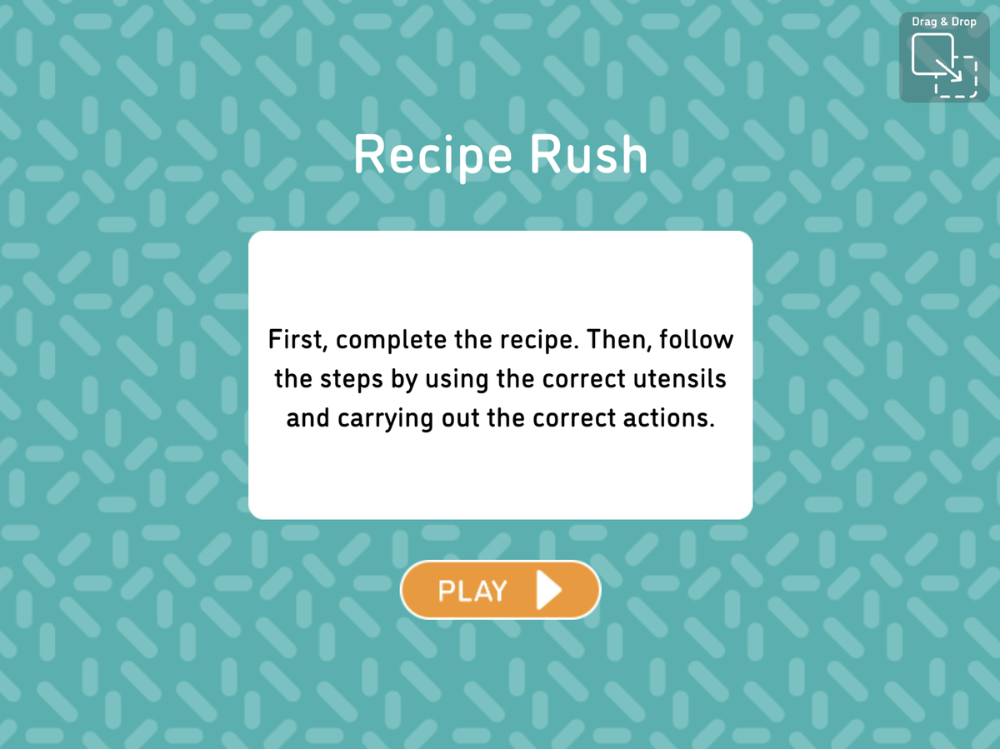
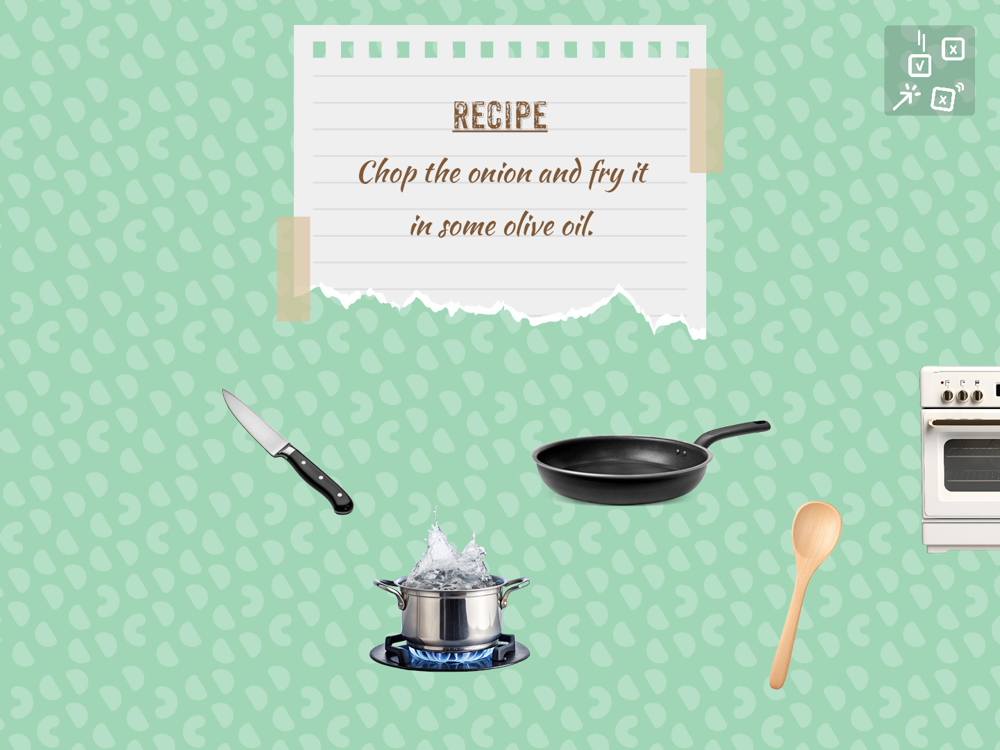
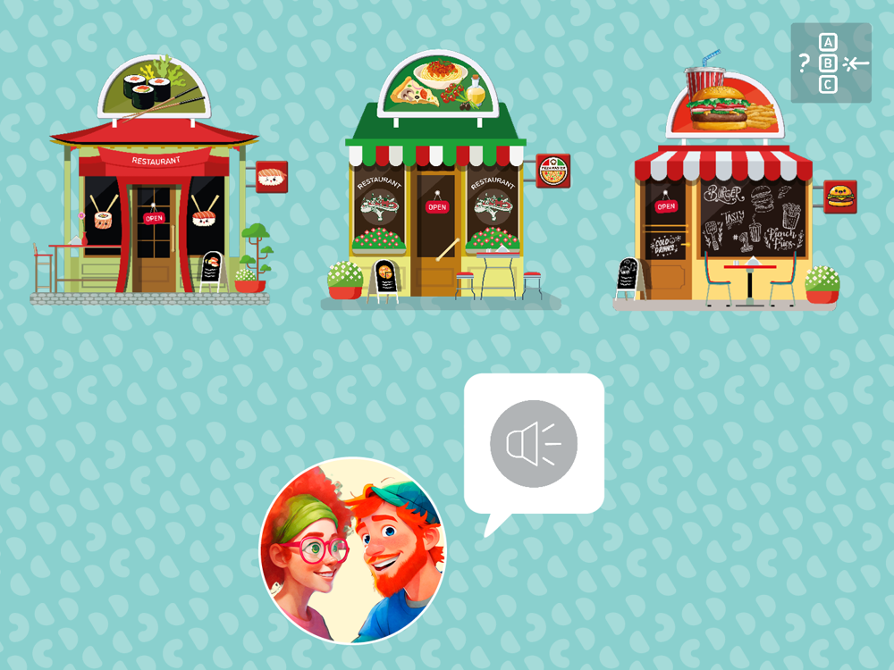

Learning Meter
Speaking and writing activities inside MyWay, Kids&Us’s gamified app for children aged 8 to 12 learning English as a second language. A child speaks into a game and ten words come back telling them what to fix, marked by AI against a teacher’s rubric. Getting those ten words right meant building the thing underneath: rubrics, anchor answers, a test set, and an evaluation loop that ran before anything reached a child.
In the press Kids&Us mejora la participación de su alumnado en un 40% con la IA de Microsoft Microsoft Source EMEA, 16 January 2025 · Microsoft’s write-up of MyWay and the Azure OpenAI services behind it
The activities the Learning Meter sits inside
MyWay teaches through short activities, each one framed as a game and marked in the corner with how it will be answered. The Learning Meter reads the speaking and writing ones, where a child produces the language themselves.



Product screens from MyWay. The artwork, characters and activity content are Kids&Us’s.
Four bands, each with anchor answers for every activity
The model never scored against “good English” in general. For every mini-activity it got the question, what to check, and a real example answer at each band. It could choose any score from 20 to 100, anchored to these four.
Follow one answer through the Learning Meter
This work lived in Jupyter notebooks, rubric spreadsheets and model runs, and what a child saw at the end of it was ten words of feedback. The walkthrough rebuilds the pipeline so the stages in between are visible: the same rubric, the same anchor answers, the same scores. Switch between the first prompts and the tuned ones to see what the evaluation loop changed.
About 4,000 answers with known scores, before anything reached a child
Double-scoring, to catch drift
Every answer in the set was graded twice, so the same answer scoring differently on two runs showed up as a number rather than as a complaint after launch. Model settings were kept low-creativity for the same reason: grading has to be repeatable before it can be trusted.
Did it get more trustworthy?
What I decided, and why
Feedback is read mid-game, so it is short, in the first person, names the fix, and stays strict on the score.
A correct idea in another language is still a miss in a language course, so it became a hard rule in every prompt.
Children give many of the same answers. Matching them first made scoring instant and cheaper, and it made the same answer always get the same score.
Where I worked across the lifecycle
From writing the rubric to the accuracy numbers that decided what shipped, and the handoff that kept it running.
This demo is scripted, on purpose. The real Learning Meter ran on Kids&Us systems, on children’s voice and writing data. I have since left the organisation, so the live model isn’t mine to run. Every answer here is pre-scored from my own rubric, prompt databases and test results. No child data is shown, and all figures are rounded.